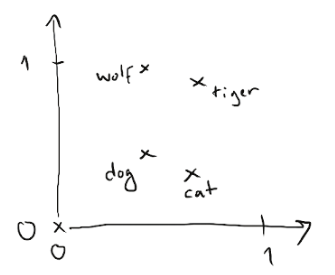

L3 Informatique, Université Claude Bernard Lyon 1.
This is a group project from Université Claude Bernard Lyon 1 students.
This dataset comes from the "Movie Review Sentiment Analysis" Kaggle Challenge. It was extracted from the Rotten Tomatoes Website.
The dataset we are working with seems to be based on a popular Natural Language Processing (NLP) dataset. It is called Stanford Sentiment Treebank (SST).
The SST dataset is commonly classified following one of the 2 following standards:
As of March 2019, the best accuracy for binary classification is 95.6% (source). Link to the research paper: Multi-Task Deep Neural Networks for Natural Language Understanding.
As of March 2019, the best accuracy for 5-way classification is 54.7% (source). Link to the research paper: Learned in Translation: Contextualized Word Vectors.
It should not be possible to get a 100% accuracy. A good example is in the logo from this website: "everything you'd expect -- but nothing more". It is possible to assign either a positive or negative sentiment to that sentence, so we don't really know the intent of the author unless we look at how many stars he gave to the movie. Moreover, the sentences in the dataset have been labelled by human beings, which means some sentences could be labelled with another sentiment if they were rated by someone else.
As can be seen on the GLUE Benchmark, human beings are still better than machines on the binary classification task, but they don't get a 100% accuracy.
We use supervised learning: the models we show learn to predict sentiment from text by looking at labelled examples. However, we can't feed raw string data directly into the models: the text needs to be transformed (and simplified) in order to be usable by the models.
There are other ways to do it, but here we show 2 methods that are frequently used in NLP problems. In many NLP models, we end up wanting to transform an input sentence into an input vector.
In the "Bag of Words" approach, we do two different things:
There are some drawbacks to that method: first, we discard the order of the words, which can be useful for meaning. Second, there are no relationships between words, they are either present or absent.
With word embeddings, we turn each word of the sentence into an integer vector. Word embeddings rely on the distributional hypothesis: the basic idea is that two words that tend to appear in the same context tend to have a similar meaning.
Source: Deep Learning with Python, François Chollet
That technique is interesting because it allows us to capture relationships between words. For instance, the relationship between 'Dog' and 'Cat' is the same as between 'Wolf' and 'Tiger' when we represent the word vectors into space.
It is possible to learn the word embedding vectors directly from our dataset, as it is large enough. It is also possible to use external word embedding vectors, that were trained on other text documents.
| Model | Feature representation | Kaggle score | Kernel link |
|---|---|---|---|
| Random Forest | Bag of Words (One-hot vectors) | 57.4 | Go |
TODO
Model prediction: (None)